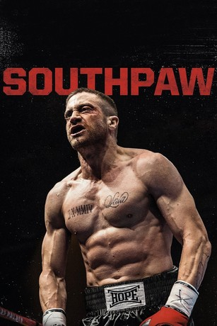
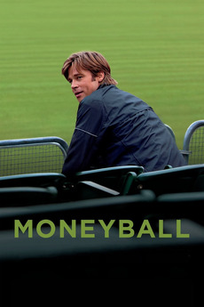
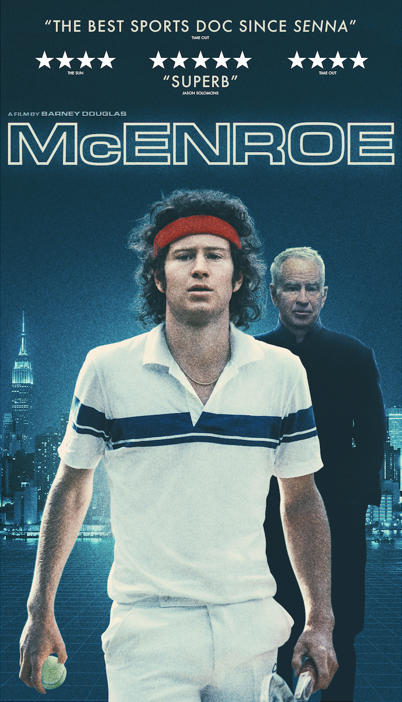
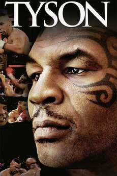
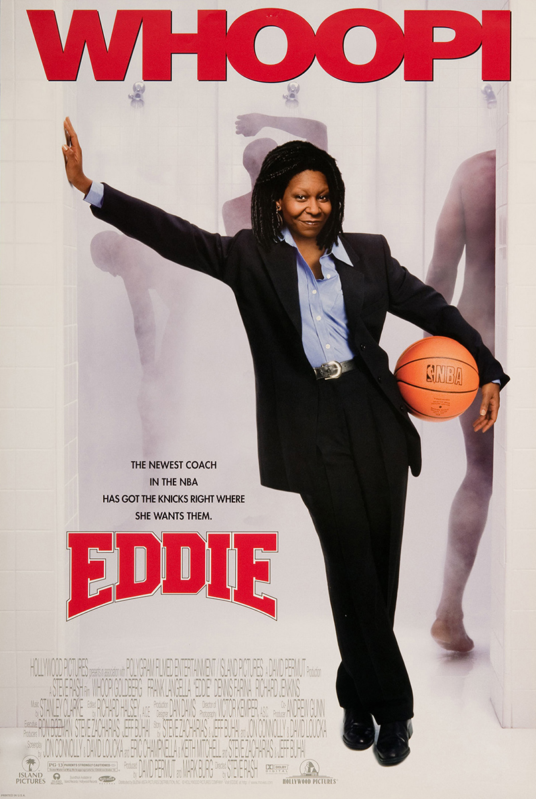

Raging Bull (1980)
Overview
Jake LaMotta's brutal ring life mirrors his self-destructive fury outside it, turning triumphs into tragedies. Raw poetry in every punishing blow, though the unrelenting intensity may overwhelm some viewers.
Stories of grit, redemption, and triumph in the ring, on the court, and across the field. From underdog victories to championship glory.
Stories of grit, redemption, and triumph in the ring or cage.
Jake LaMotta's brutal ring life mirrors his self-destructive fury outside it, turning triumphs into tragedies. Raw poetry in every punishing blow, though the unrelenting intensity may overwhelm some viewers.

Adonis Creed steps from his father's shadow into the ring, blending legacy with fresh fire. Emotional knockout with heart-pounding authenticity, though some may find the formula familiar.

Micky Ward battles family dysfunction and ring rivals in a gritty comeback saga. Real, raw, and relentlessly inspiring, though the chaotic clan drama may overwhelm some.

A Philly underdog gets one shot at glory, proving heart trumps hype. The blueprint for every comeback tale that followed, though some may find the sentiment dated.

Boyka fights prison foes for a shot at freedom, blending brutal brawls with redemption arcs. Pure guilty-pleasure pugilism with nonstop action, though the thin plot may disappoint some.

A champ's world crumbles after tragedy, forcing a raw rebuild in the ring and beyond. Gyllenhaal's sweat-soaked grit keeps it swinging above the ropes, though the melodrama may feel over-the-top.

Boyka seeks atonement in underground cages, trading fury for focus. Bone-crunching choreography hooks fight fans, though the formulaic approach may feel like fan service.

Vinny Pazienza defies a shattered neck for an improbable ring return. Underdog defiance and comeback chills earn it extra rounds, though uneven pacing and clichés may frustrate some.

Adonis faces Drago's son in a grudge-fueled rematch, echoing old wounds. Family drama and fist-pumping spectacle entertain, though the recycled Rocky beats may feel familiar.

A fallen champ battles in a Russian prison tourney for survival. Escalating scraps and Boyka's breakout villainy make it a scrappy crowd-pleaser, though low-budget limitations show.

A jailed boxer clashes with the prison's undefeated kingpin. Tense buildup and solid scraps keep it from a total KO, though the routine ring drama may draw yawns.

An ex-con storms underground fights to fulfill a vow. Jai White's martial mastery turns it into a bone-snapping guilty thrill, though the sparse script disappoints.

Foreman's ring-to-pulpit-to-ring odyssey preaches perseverance. Uplifting hooks appeal to the faithful, though the hagiographic gloss and slow sermons may deter some.

Aging Rocky laces up for one last bout, chasing faded glory. Heartfelt grit still lands punches on nostalgia's chin, though sentimental swells may feel maudlin to some.

Adonis grapples with a vengeful past pal in the ring. Flashy visuals dazzle, but rote revenge tropes and absent Rocky leave audiences swinging at shadows.

Van Damme avenges his bro in Thai kickboxing hell. Splits and spins flex nostalgic muscle, though cheesy '80s excess draws laughs over gasps.

Rocky juggles fame, family, and a rematch grind. Familiar beats feel like echoes—solid, but no fresh haymaker to distinguish it from the original.

Rocky faces overconfidence and Clubber Lang's fury. Cartoonish flair amuses, but the eye-of-the-tiger sequel syndrome leaves it punching below its weight.

Rocky vs. Drago: Cold War slugfest with synth-rock flair. Patriotic cheese curdles for some, but the robot and revenge rally still score with '80s nostalgia junkies.

Broke Rocky mentors a hothead protégé amid family strife. Crowned the franchise flop—drab, dated, and dodging the ring for soap opera slips.
Tales of hoop dreams, rivalries, and redemption on the court.

A coach benches his squad for grades over games, igniting life lessons. Iron-fist inspiration that hooks hearts, though the formulaic approach may irk some.

A jailed dad pressures his hoops phenom son for college glory. Raw family feud that scores big, though uneven pacing trips up the momentum at times.

A scout unearths raw talent overseas for NBA redemption. Sandler's grit shines, but clichés clog the court—still, the underdog drive dribbles past gripes.

A streetball vet recruits graybeard greats for glory. NBA cameos charm, but the ad-turned-flick fizzles with forced fun—more foul than slam dunk.

Magic kicks zap an orphan to NBA stardom. Kid whimsy wanes fast for adults, with thin plot and dated gags drawing yawns amid the hoopla.
Stories of ambition and triumph on the court.

Richard Williams blueprints his daughters' tennis dynasty amid doubt. Magnetic drive dazzles, though some may find the grit too glossed over.
Gridiron battles and team spirit, on and off the field.

A coach forges unity from racial rifts in a '70s gridiron clash. Triumphant team spirit that still touchdowns, though cheesy moments may grate on cynics.

A counselor turns juvie toughs into a football force for hope. Earnest but earnest-to-a-fault, with manipulative moments that sideline subtlety.

A QB dad discovers surprise fatherhood amid gridiron glory. Rock's charm carries the cute chaos, but the kiddie clichés fumble the laughs.

Inmates vs. guards in a prison pigskin payback. Crude crew amuses, but the draggy drags and dated drags sink this remake below the original's line.
Stories from the diamond and beyond, blending strategy and heart.

Beane's stats revolution flips baseball's script on a shoestring. Clever underdog math that still calculates wins, though the nerdy numbers may nerd out some purists.

Baseball bonds boys through summer scrapes and beastly blunders. Nostalgic charm enchants, though '90s saccharine sours for skeptics—timeless kid magic.

A coach molds migrant teens into cross-country contenders. Uplifting formula feels familiar, with cultural gloss-ups dodging deeper dives into hardship.

A rower's obsession rows into dark waters of self-destruction. Intense immersion grips, but the unrelenting intensity exhausts without enough emotional oars.

Misfits hurl rubber for gym glory in absurd arena antics. Crude cult quips quotably charm, but the dodge-drag drags on past the dodgeball fun.

A dimwit water boy tackles to gridiron stardom. Sandler's shtick slays slapstick fans, but the one-note hilarity hydrates only so deep before drying up.
Mental battles and intellectual triumphs on the board.

A chess whiz kid navigates prodigy pressures and parental pulls. Nuanced checkmates on ambition charm, with rare '90s cheesiness checkmated by smarts.

Fischer's Cold War chess clash with Spassky simmers with paranoia. Tense tactics thrill, though biopic blandness bishops away bolder strokes.

An ex-con checkmates at-risk youth with strategy and second chances. Earnest redemption rook-slides clichés, but Whitaker's wisdom knights it worthwhile.
Real-life legends and their journeys to greatness.

McCaw's rugby reign unfolds with leadership's quiet costs. Intimate intensity inspires, though niche appeal limits the scrum to diehards.

Ali's tapes tape a champ's charisma and cracks. Personal poetry punches, but familiar footage floats familiar floats for fight fans.
Carlsen's chess ascent captures prodigy poise under pressure. Brainy brilliance bewitches, but biographical beats bishop basic for non-nerds.

McEnroe unpacks his fiery serves and simmering regrets. Candid courtside confessions connect, though surface scratches miss deeper deuces.

Pelé's slum-to-stardom sprint dazzles with footwork flair. Glossy goals gleam, but hagiographic haze headers home the inspirational basics.

Adesanya's MMA rise reveals rage's razor edge. Vibrant vibe vivifies, but the octagon orbit orbits familiar fighter fatigue for non-fans.

Tyson's turbulent tale in his own turbulent words. Raw remorse resonates, but self-serving soliloquies sideline scrutiny for a one-sided bout.

Liston's shadowy saga probes mob ties and murky ends. Enigmatic enigmas engage, but shadowy sources shadow the sleuthing with speculation.
Dark tales of fandom and rivalry gone too far.

A fan's foul obsession fouls a baseball star's season. Tense thriller twists, but overblown histrionics homer into hammy territory.
Family-friendly tales of athletic dreams and underdog victories.

The Antetokounmpos hoop from hardship to hardwood heroes. Heartwarming hustle hits, but polished Disney sheen smooths sibling struggles.

A fan-fanatic coaches the Knicks to improbable wins. Cameo chaos courts laughs, but the benchwarmer plot benches originality.